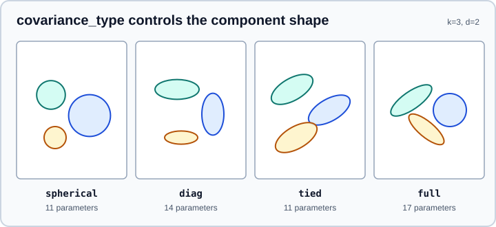

Gaussian Mixture Models
|
This content was generated with the assistance of AI and should be verified against the official documentation before being relied on in production. |
A Gaussian mixture model (GMM) says that the data was produced by a handful of bell-shaped groups, each with its own
centre, spread and share of the data, and that you do not know which group generated which row. Fitting the model recovers
the groups and, unlike k-means, tells you how confident the assignment is. A GMM is simultaneously a clustering method, a
probability density estimator and a generator of new samples. This page covers sklearn.mixture in scikit-learn 1.9
(checked in October 2026 against 1.9.1, Python 3.13, NumPy 2.5.4). Examples target Python 3.13 or 3.14 and were run on Python 3.13. Every example was run on
those versions and the printed output is real.
It sits next to Clustering (k-means, DBSCAN, HDBSCAN) and Outlier & Novelty Detection (a mixture’s density can flag low-likelihood points). The statistical background on distributions is in Statistics Fundamentals.
The model
A mixture with K components has density p(x) = sum_k w_k N(x | mu_k, Sigma_k), where the weights w_k are non-negative
and add to 1, mu_k is the mean and Sigma_k the covariance matrix of component k. GaussianMixture estimates all of
these by expectation-maximisation (EM), which alternates two steps until the likelihood stops improving:
-
E-step: for each row, compute the probability (the "responsibility") that each component generated it.
-
M-step: update weights, means and covariances to maximise the likelihood given those responsibilities.
EM is guaranteed to converge to a local optimum, not necessarily the best one, which is why n_init and the
initialisation matter. K-means is the limiting case with equal spherical components and hard assignments; a GMM
additionally learns component shapes and sizes.
A first fit
import numpy as np
from sklearn.datasets import make_blobs
from sklearn.mixture import GaussianMixture
from sklearn.metrics import adjusted_rand_score
X, y = make_blobs(n_samples=600, centers=[[0, 0], [4, 1], [1, 5]],
cluster_std=[1.0, 0.6, 1.3], random_state=7)
X = X @ np.array([[1.0, 0.4], [0.0, 1.0]]) # shear so the clusters are elliptical
gmm = GaussianMixture(n_components=3, covariance_type="full", n_init=5, random_state=0).fit(X)
print("converged:", gmm.converged_, "n_iter_:", gmm.n_iter_, "lower_bound_:", round(gmm.lower_bound_, 4))
print("weights_:", gmm.weights_.round(3))
print("means_:\n", gmm.means_.round(2))
print("covariances_ shape:", gmm.covariances_.shape, "precisions_cholesky_ shape:", gmm.precisions_cholesky_.shape)
labels = gmm.predict(X)
proba = gmm.predict_proba(X)
print("ARI:", round(adjusted_rand_score(y, labels), 3))
print("first proba row:", proba[0].round(3), "sums to", proba[0].sum().round(3))
print("score (mean log-likelihood per sample):", round(gmm.score(X), 3))
print("score_samples[:3]:", gmm.score_samples(X[:3]).round(3))
Xn, yn = gmm.sample(5)
print("sample shapes:", Xn.shape, yn)converged: True n_iter_: 3 lower_bound_: -3.6715 weights_: [0.332 0.323 0.345] means_: [[-0.05 -0.09] [ 1.13 5.42] [ 3.98 2.53]] covariances_ shape: (3, 2, 2) precisions_cholesky_ shape: (3, 2, 2) ARI: 0.955 first proba row: [0. 1. 0.] sums to 1.0 score (mean log-likelihood per sample): -3.671 score_samples[:3]: [-3.754 -4.237 -3.571] sample shapes: (5, 2) [0 0 1 1 2]
What each call returns:
| Member | Meaning |
|---|---|
|
The most probable component for each row (a hard label) |
|
The responsibilities: one row per sample, one column per component, rows add to 1 (the soft assignment) |
|
The log of the density |
|
The average of |
|
Draws |
|
Information criteria for choosing the model (lower is better) |
|
The fitted parameters; |
|
Whether EM met |
A component has no name or meaning: label 0 in one fit is not label 0 in another. Compare fits through their parameters or with a label-invariant score such as the adjusted Rand index (see Metrics & Scoring).
Covariance types
covariance_type limits the shape of every component, trading flexibility against the number of parameters to estimate:

covariance_type |
Shape of each component | Parameters per covariance |
|---|---|---|
|
A circle (one variance per component) |
1 per component |
|
An axis-aligned ellipse (one variance per feature) |
d per component |
|
All components share one full covariance matrix |
d(d+1)/2 in total |
|
Every component has its own free ellipse, at any rotation |
d(d+1)/2 per component |
The panel labels count every parameter of a three-component model on two features (means, covariances and the K - 1 free
weights). The cost grows quickly with the number of features: a full covariance in 50 dimensions has 1,275 parameters per
component. With little data, prefer "diag", "tied" or "spherical"; with plenty of data and correlated features, "full".
Choosing the number of components
A GMM always uses every component you give it, so the number must be chosen. The standard tool is an information criterion that penalises extra parameters, evaluated over a grid of component counts and covariance types:
import numpy as np
from sklearn.datasets import make_blobs
from sklearn.mixture import GaussianMixture
X, y = make_blobs(n_samples=600, centers=[[0, 0], [4, 1], [1, 5]],
cluster_std=[1.0, 0.6, 1.3], random_state=7)
X = X @ np.array([[1.0, 0.4], [0.0, 1.0]])
for cov in ("spherical", "diag", "tied", "full"):
row = []
for k in range(1, 7):
g = GaussianMixture(n_components=k, covariance_type=cov, n_init=3, random_state=0).fit(X)
row.append(g.bic(X))
best = int(np.argmin(row)) + 1
print(f"{cov:9s} best k={best} BIC={min(row):.1f}")spherical best k=5 BIC=4530.4 diag best k=5 BIC=4554.3 tied best k=6 BIC=4560.3 full best k=3 BIC=4514.3
Read the result carefully: the lowest BIC overall (4514.3) belongs to "full" with three components, which is the truth
here. The restricted shapes need more components to cover elliptical clusters with circles and axis-aligned
ellipses, and still lose. This is a typical pattern: choose the covariance type and the number of components together.
-
BIC penalises parameters more strongly than AIC and tends to pick smaller models. Both are lower-is-better; neither is a guarantee. The docs note that BIC recovers the true number of components only asymptotically, with a lot of data and samples that really come from a Gaussian mixture.
-
In exploratory work "the right number of clusters" may not be well defined. Look at the BIC curve for an elbow and at whether the clusters make sense, not only at the minimum.
-
An alternative is held-out log-likelihood: fit on a training split and compare
scoreon a validation split; see Train/Test Split and Cross-Validation & Splitters. A mixture estimator also works withGridSearchCV, whose default score isscore(the mean log-likelihood); see Grid, Randomized & Halving Search.
Initialisation and local optima
init_params chooses how the first responsibilities are built:
init_params |
Behaviour |
|---|---|
|
Run k-means first; accurate but can be slow for large data and many components |
|
Spread-out seeding only; faster than full k-means |
|
Random rows as the starting centres; very fast, but can fail to converge if the rows are too close |
|
Random responsibilities (small perturbations around the global mean); simple but may converge slowly or to a poorer optimum |
You can also pass weights_init, means_init and precisions_init to start from known values, and n_init (default 1) to
repeat the whole fit and keep the best run. Use n_init above 1 whenever the result matters:
from sklearn.datasets import make_blobs
from sklearn.mixture import GaussianMixture
X, y = make_blobs(n_samples=500, centers=3, random_state=3)
for ip in ("kmeans", "k-means++", "random", "random_from_data"):
g = GaussianMixture(3, init_params=ip, random_state=0).fit(X)
print(f"{ip:17s} n_iter={g.n_iter_:3d} lower_bound={g.lower_bound_:.4f}")kmeans n_iter= 2 lower_bound=-3.9341 k-means++ n_iter= 3 lower_bound=-3.9342 random n_iter= 2 lower_bound=-4.6237 random_from_data n_iter= 8 lower_bound=-3.9342
The "random" start converged (EM stopped improving) at a clearly worse log-likelihood (-4.62 against -3.93): a local
optimum. A higher lower_bound_ is a better fit; compare it, not the label order, when ranking runs. Setting
warm_start=True reuses the previous fit’s parameters as the starting point of the next fit, which is handy for
refining a model on slightly changed data.
Singular covariances and reg_covar
With few points per component, or duplicated rows, a component can collapse onto a handful of identical points and its
covariance matrix becomes singular; the likelihood then grows without bound. reg_covar (default 1e-6) adds a small
constant to the diagonal of every covariance to prevent this. Setting it to zero invites the failure:
import numpy as np
from sklearn.datasets import make_blobs
from sklearn.mixture import GaussianMixture
X, y = make_blobs(n_samples=500, centers=3, random_state=3)
Xd = np.vstack([X, np.repeat(X[:1], 60, axis=0)]) # 60 identical rows
for reg in (0.0, 1e-6):
try:
g = GaussianMixture(4, reg_covar=reg, random_state=0).fit(Xd)
print("reg_covar", reg, "ok, lower_bound", round(g.lower_bound_, 3))
except ValueError as e:
print("reg_covar", reg, "ValueError:", str(e)[:150])reg_covar 0.0 ValueError: Fitting the mixture model failed because some components have ill-defined empirical covariance (for instance caused by singleton or collapsed samples) reg_covar 1e-06 ok, lower_bound -2.544
Notice that the "ok" fit reaches a higher likelihood only because it fits a spike of duplicated points. The remedy for a
collapsed component is to remove the duplicates, reduce n_components, use a simpler covariance_type, or raise
reg_covar; not to trust the likelihood.
A variational alternative: BayesianGaussianMixture
BayesianGaussianMixture fits the same family with variational inference and priors instead of plain EM. The priors
regularise the fit (singularities are avoided) and, with a small weight_concentration_prior, push the weights of
unneeded components towards zero, so you supply only an upper bound for n_components:
import numpy as np
from sklearn.datasets import make_blobs
from sklearn.mixture import BayesianGaussianMixture
X, y = make_blobs(n_samples=600, centers=[[0, 0], [4, 1], [1, 5]],
cluster_std=[1.0, 0.6, 1.3], random_state=7)
X = X @ np.array([[1.0, 0.4], [0.0, 1.0]])
bgm = BayesianGaussianMixture(
n_components=8,
weight_concentration_prior_type="dirichlet_process",
weight_concentration_prior=0.01,
n_init=3, max_iter=500, random_state=0,
).fit(X)
print("weights_:", bgm.weights_.round(3))
print("effective components (weight > 0.01):", int((bgm.weights_ > 0.01).sum()))weights_: [0.346 0.331 0.322 0. 0. 0. 0. 0. ] effective components (weight > 0.01): 3
Source: scikit-learn User Guide, Variational Bayesian Gaussian mixture and Concentration Prior Type Analysis of Variation Bayesian Gaussian Mixture.
Eight components were allowed and three survived. The main choices:
-
weight_concentration_prior_type:"dirichlet_process"(default, an infinite mixture truncated atn_components; the number actually used depends on the data) or"dirichlet_distribution"(a finite mixture; large concentrations give more uniform weights). -
weight_concentration_prior: low values keep a few components active, high values allow many. -
The other priors (
mean_precision_prior,mean_prior,degrees_of_freedom_prior,covariance_prior) rarely need tuning.
It is somewhat slower than EM, has one more hyperparameter to tune, and its implicit biases can hurt when they do not
match the data; a plain finite mixture may then fit better. Neither estimator gives you a single "right" model, only a
well-regularised one. The weights_ of a mixture can also tell you how large each cluster is.
Using a mixture to find unusual points
Because score_samples returns the log-density, a low value is a signal that a row is unlikely under the model, which is
a quick density-based outlier flag:
import numpy as np
from sklearn.datasets import make_blobs
from sklearn.mixture import GaussianMixture
X, y = make_blobs(n_samples=500, centers=3, random_state=3)
g = GaussianMixture(3, max_iter=1, warm_start=True, random_state=0)
for i in range(3): # three refits, each continuing from the last
g.fit(X)
print("fit", i, "n_iter_", g.n_iter_, "lower_bound", round(g.lower_bound_, 4))
dens = g.score_samples(X)
thr = np.percentile(dens, 2) # flag the lowest 2 percent
print("flagged:", int((dens < thr).sum()), "of", len(X))
print("bic", round(g.bic(X), 1), "aic", round(g.aic(X), 1))fit 0 n_iter_ 1 lower_bound -3.9343 fit 1 n_iter_ 1 lower_bound -3.9341 fit 2 n_iter_ 1 lower_bound -3.9341 flagged: 10 of 500 bic 4039.8 aic 3968.1
Running with max_iter=1 makes scikit-learn emit a ConvergenceWarning on each call, because EM has not converged; it is
used here only to show warm_start. For a real model leave max_iter at its default or raise it, and check
converged_. The percentile cut-off is a policy choice; if flagging is the main goal, the dedicated estimators in
Outlier & Novelty Detection have a consistent predict convention.
Pitfalls
-
Treating a GMM as a classifier: it is unsupervised; compare against labels only with label-invariant metrics.
-
Feeding features on different scales: covariance estimation copes with correlation but not with wildly different units or heavy tails; scale features and inspect the distribution first (Exploratory Data Analysis).
-
Choosing
n_componentsby looking at the training log-likelihood: it always improves as components are added. -
Ignoring
converged_andConvergenceWarning: raisemax_iter, loosentol(default 1e-3) or change the initialisation. -
Expecting Gaussian shapes from non-Gaussian clusters (rings, moons, long tails): a mixture will approximate them with many components; use a density-based method such as DBSCAN or HDBSCAN (see Clustering).
-
High dimensions with
"full"covariances and little data: too many parameters; reduce dimensions first (see PCA, TruncatedSVD & NMF).